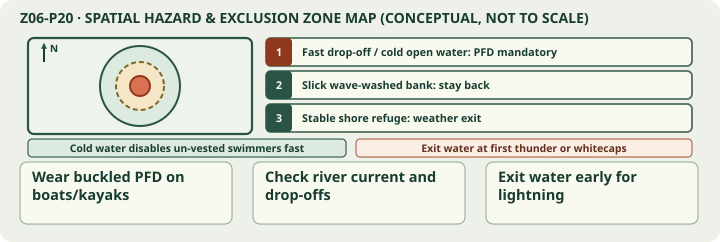

Z06-P20 · Hunting and fishing · New manuscript
Open-Water Shore, Wading and Cold-Water Angling Safety
Prevent drowning, cold-water shock, and lightning strikes while shore-angling, wading rivers, or fishing from small watercraft.
When it applies · Rivers, rocky North Shore ledges, reservoirs, and small fishing boats/kayaks.
Equipment · USCG-approved PFD worn buckled, wading belt/staff where appropriate, weather radio.

Actions
- Wear a buckled USCG-approved personal flotation device whenever fishing from kayaks, canoes, or small boats—especially in spring and autumn cold water when immersion rapidly disables swimming.[H18, X17]
- Assess river current, submerged drop-offs, and slick algae boulders before wading; wear a snug wading belt over chest waders and never wade fast flood-swollen streams.[H18]
- Move off open lakes, rocky points, and metal boats immediately when thunder is heard or storm fronts build because graphite rods and open water heighten lightning danger.[H18, N05]
Failure recognition · Sitting on a stowed life jacket in cold spring water or wading above waist-deep swift currents leads to rapid drowning.[H18, X17]
Verify · PFDs are worn buckled afloat, wading stays shallow and stable, and weather is monitored continuously.[H18]
Stop or change course · Stop angling and move to safe shore shelter immediately if wind builds whitecaps, river flow rises, or lightning approaches.[H18, N05]
Evidence and editorial notes
- H18 · Minnesota DNR · Waterfowl Hunting and Federal Migratory Bird Rules (Current web edition)
- Section: Waterfowl cold-water capsizing and non-toxic shot compliance · Conditions: Wetland and open-water fall waterfowl environments
Support: Cold-water immersion, overloaded boats, and wading drop-offs cause severe fatalities; wear flotation, check forecasts, and verify federal non-toxic shot and species limits.
Limitations: Emergencies and weather shifts override harvest goals; stay ashore in high wind or unverified ice. · Conflicting evidence: None noted.
Editorial note: Reconciles B013 P15-P16 with Z06 water/ice limits. · Specialist reviewer: Water-safety and wildlife reviewer
Primary source · checked 2026-11-25 - N05 · NOAA SARSAT · Frequently Asked Questions (Current web edition)
- Section: Emergency beacon types and registration · Conditions: Emergency satellite distress signaling (406 MHz PLBs and EPIRBs)
Support: A 406 MHz distress beacon transmits into the Cospas-Sarsat system. Verify country code, registration and model capabilities separately.
Limitations: PLBs are one-way distress alerts only (no two-way texting), require clear sky view and must be reserved for grave and imminent danger. · Conflicting evidence: Distinguishes one-way 406 MHz PLBs from commercial two-way satellite messengers.
Editorial note: Anchors beacon selection, sky-view limits and registration cards in Z11. · Specialist reviewer: Search and rescue and emergency communications
Primary source · checked 2026-11-24 - X17 · NWS · Hurricane Safety (current web edition)
- Section: Hurricane Safety > Storm Surge, Coastal Flooding and Inland Wind · Conditions: Tropical storms and hurricanes impacting coastal and near-coastal zones
Support: Storm surge and inland rainfall flooding are the deadliest hurricane hazards; obey coastal evacuation orders early, never shelter in low coastal zones or boats and treat calm storm eyes as temporary pauses before violent winds reverse.
Limitations: Hazardous rip currents and swell arrive hundreds of miles ahead of landfall. · Conflicting evidence: None; aligns with READY-EVAC and T13.
Editorial note: Grounds coastal storm-surge and hurricane evacuation cards in Z12. · Specialist reviewer: Emergency management and marine meteorology
Primary source · checked 2026-11-24
Source lineage · New manuscript (Z06 P17 angling safety) · Classification · New manuscript.